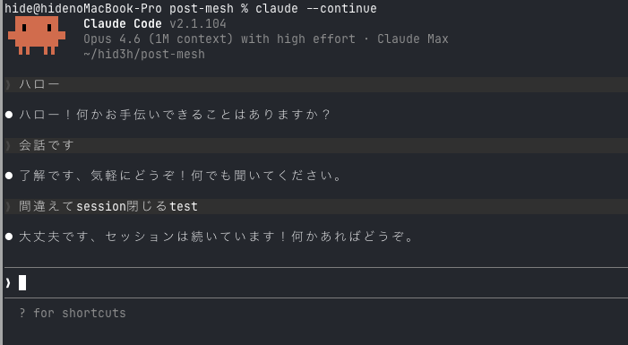
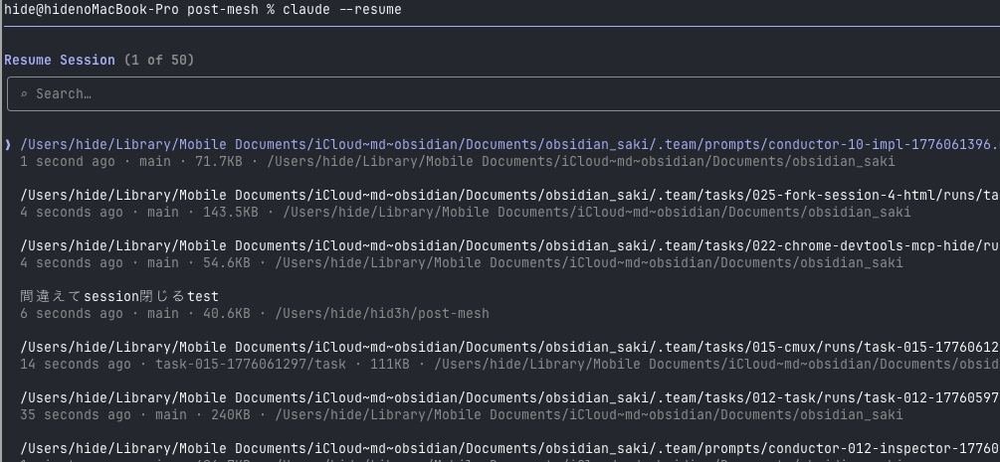

CLAUDE CODE TIPS
セッション閉じちゃった...
あの作業どこいった？
Claude Codeなら2つのコマンドで解決
~ — zsh
$
claude --continue
$
claude --resume
1 / 4
01 CONTINUE
claude --continue
（省略: -c）
😱
うっかりセッションを閉じてしまった / 翌日に続きをやりたい
→
--continueで直前のセッションをすぐ再開

✓
IDを覚える必要なし、
直前のセッション
を自動選択
⚡
会話の
コンテキストがそのまま
復元される
2 / 4
02 RESUME
claude --resume
（省略: -r）
🤔
複数セッションがあってどれを再開すればいいかわからない
→
--resumeでセッション一覧から選択して再開

★
名前指定で
特定のセッション
を即再開
↔
複数タスクの切り替え
に最適
TIP
/rename
で名前をつけておくと
claude --resume "名前"
で即再開できる
3 / 4
SUMMARY
今日のまとめ
セッション閉じちゃった
→
claude --continue
どのセッション再開する？
→
claude --resume
セッション管理を覚えると作業効率が段違い
claude --continue
から始めよう
4 / 4